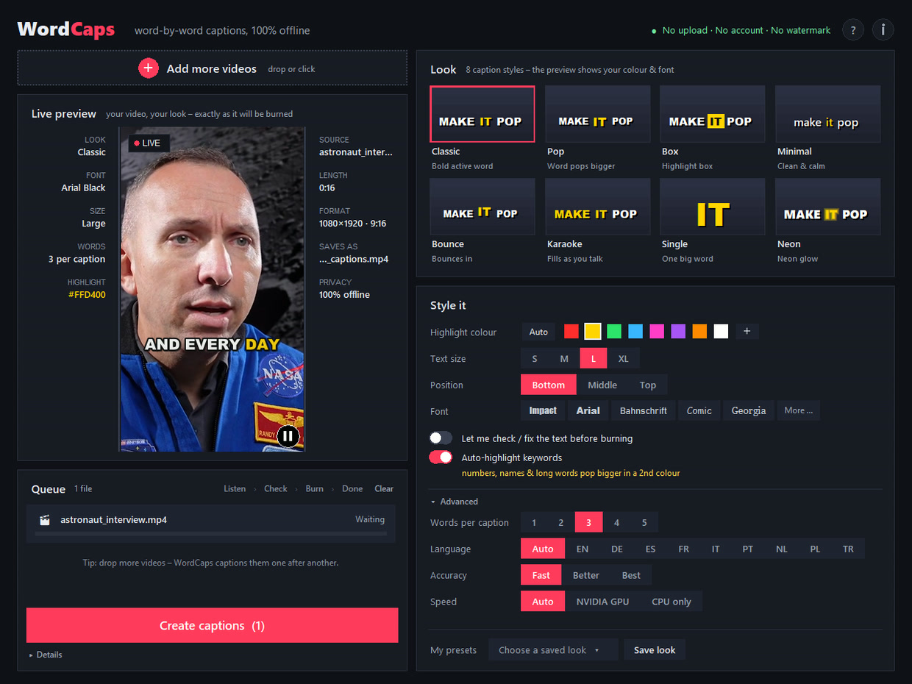
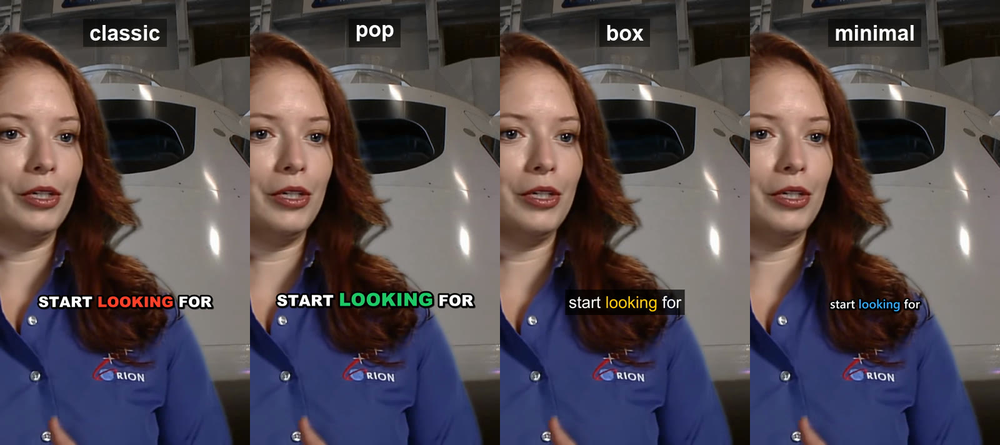

Word-by-word captions.
One click. No subscription.
WordCaps Studio is an offline Windows app that adds animated, word-by-word captions to your TikToks, Shorts and Reels – no watermark, no upload, no monthly fee.
Get WordCaps Studio – €4.99 onceSee how it worksLooks that keep people watching
Highlighted active word, 1–5 words on screen. Eight ready looks – classic, pop, box, minimal, bounce, karaoke, single word and neon glow. Keywords like numbers and names pop bigger in a second colour. Any font, or any colour, size and position.
Your video stays on your PC
Speech recognition runs locally with the open Whisper model. No account, no cloud, no upload limits.
Fix it before it's burned in
Check and correct the recognised text in an editor first – then burn in. Names and slang come out right.
Batch mode
Drop several clips and caption them all in one go – ideal for a week of Shorts.
Keeps your workflow
Besides the finished MP4 you get SRT and ASS files for CapCut, Premiere Pro and DaVinci Resolve.
Fast
2-minute clip: about 35 s on a normal CPU, about 15 s with an NVIDIA GPU (free add-on).


How it works
- Unzip and double-click WordCaps.exe – nothing to install.
- Drop one or more videos on the window (portrait or landscape).
- Choose a look, colour, font, size and position – the live preview shows your own video.
- Check the recognised text, fix anything wrong, press Burn.
WordCaps Studio compared
| WordCaps Studio | CapCut Pro | Submagic | Free DIY (Whisper + Subtitle Edit) | |
|---|---|---|---|---|
| Price | €4.99 once | monthly or yearly plan | from about $20/month | free |
| Works offline | yes | needs account/online | cloud upload | yes |
| Word-by-word highlight | yes, one click | yes | yes, 20+ styles | manual styling |
| Watermark | never | none on Pro | free plan: yes | none |
| Batch | yes | one by one | plan-dependent | scripting |
| Platforms | Windows | Win, Mac, mobile, web | web | Windows (+ others) |
Competitor features and prices as published by the vendors, November 2026; they change often and vary by region. Full comparison: WordCaps Studio vs CapCut.
FAQ
What is WordCaps Studio?
WordCaps Studio is a low-cost offline Windows app that automatically adds word-by-word captions to videos for TikTok, YouTube Shorts and Instagram Reels. It costs €4.99 once, has no subscription and never adds a watermark.
Does it work offline?
Yes. Speech recognition (the open Whisper model) and rendering (FFmpeg) run completely on your PC. Your video is never uploaded and you don't need an account.
Is it a Submagic alternative?
For the captions part, yes: WordCaps Studio makes animated word-by-word captions like Submagic, but offline on Windows, without upload or subscription (€4.99 once). Submagic does more (emojis, B-roll, Mac/web). Free & offline Submagic alternatives.
Is it a CapCut auto captions alternative?
Yes. CapCut moved auto captions into its paid Pro plan in 2025. WordCaps Studio makes the same style of word-by-word captions for a one-time price – and the SRT/ASS export still lets you finish in CapCut. Guide: auto captions without CapCut Pro.
Which languages?
English, German, Spanish, French, Italian, Portuguese, Dutch, Polish, Turkish and many more – detected automatically.
Mac?
Not yet – Windows 10/11, 64-bit only.
Are the captions perfect?
Speech recognition is very good but not flawless. That's why WordCaps Studio lets you check and fix the text before it is burned in.
How big is the download?
About 630 MB zipped (app, FFmpeg and the speech model are included, so it works offline from the first start). The GPU add-on for NVIDIA cards is a separate optional download.